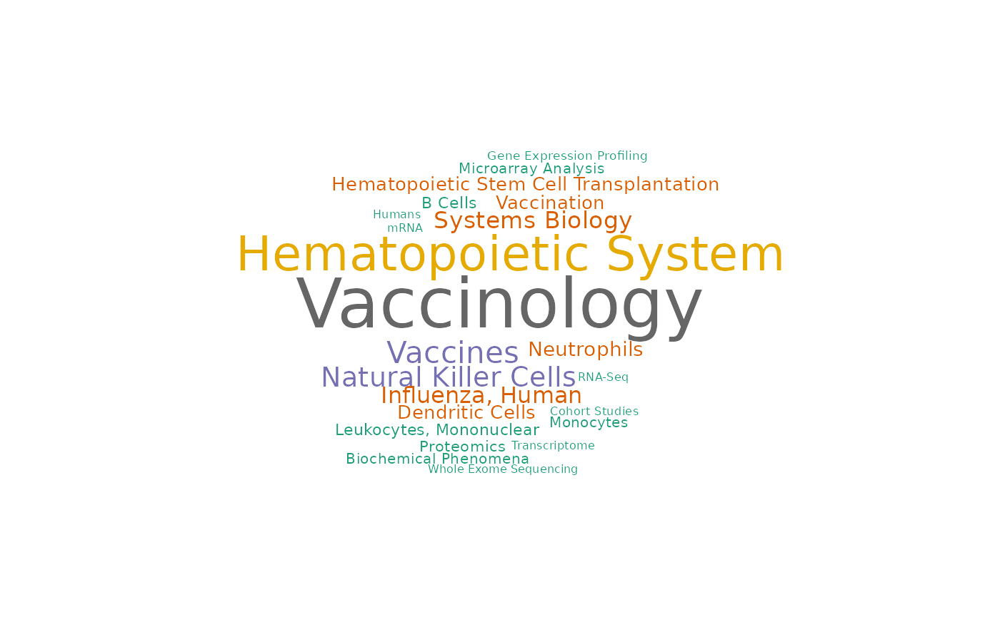
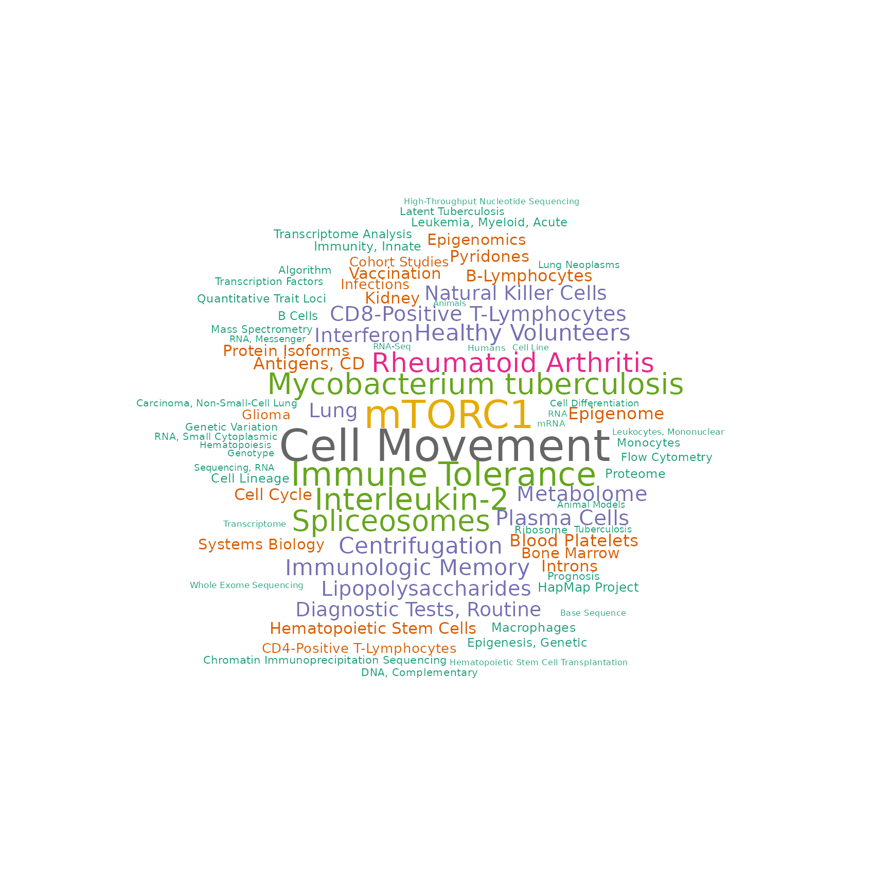

PCA E-MTAB-2452
Sehyun Oh
June 02, 2021
Source:vignettes/E-MTAB-2452/E-MTAB-2452.Rmd
E-MTAB-2452.RmdSetup
RAVmodel
Because this dataset is comprised of isolated immune subsets and was analyzed in multiPLIER paper, I used the model annotated with PLIER priors.
RAVmodel <- getModel("PLIERpriors", load=TRUE)
RAVmodel
#> class: PCAGenomicSignatures
#> dim: 13934 4764
#> metadata(7): cluster size ... updateNote version
#> assays(1): RAVindex
#> rownames(13934): CASKIN1 DDX3Y ... CTC-457E21.9 AC007966.1
#> rowData names(0):
#> colnames(4764): RAV1 RAV2 ... RAV4763 RAV4764
#> colData names(4): RAV studies silhouetteWidth gsea
#> trainingData(2): PCAsummary MeSH
#> trainingData names(536): DRP000987 SRP059172 ... SRP164913 SRP188526
updateNote(RAVmodel)
#> [1] "536 refine.bio studies/ top 90% varying genes/ GSEA with 3 priors from PLIER (bloodCellMarkersIRISDMAP, svmMarkers, and canonicalPathways)"Load E-MTAB-2452
annot.dat <- readr::read_tsv("data/E-MTAB-2452_hugene11st_SCANfast_with_GeneSymbol.pcl") %>% as.data.frame
rownames(annot.dat) <- annot.dat[, 2]
dataset <- as.matrix(annot.dat[, 3:ncol(annot.dat)])
rownames(dataset) <- annot.dat$GeneSymbol
dataset[1:2, 1:4]
#> CD14_triad0058_1.CEL CD14_triad0058_2.CEL CD14_triad0058_3.CEL
#> A1BG 1.154439e-01 0.17987252 0.17031624
#> NAT2 -7.464545e-06 -0.09915562 -0.02097987
#> CD14_triad0058_4.CEL
#> A1BG 0.1767473
#> NAT2 -0.1269907Basic EDA
val_all <- validate(dataset, RAVmodel)
heatmapTable(val_all, swCutoff = 0)
drawWordcloud(RAVmodel, 1551)
plotValidate(val_all)
Plot
Annotated PCA
annotatePC(1:8, val_all, RAVmodel, n = 5, simplify = TRUE) # default scoreCutoff = 0.5
#> PC1.RAV23 PC2.RAV1552
#> 1 SVM T cells CD8 IRIS_Monocyte-Day0
#> 2 SVM T cells CD4 naive IRIS_DendriticCell-Control
#> 3 SVM T cells follicular helper DMAP_MONO2
#> 4 SVM T cells regulatory (Tregs) IRIS_Monocyte-Day7
#> 5 SVM T cells gamma delta SVM Monocytes
#> PC3.noAnnot PC4.noAnnot PC5.noAnnot
#> 1 No significant pathways No significant pathways No significant pathways
#> 2 No significant pathways No significant pathways No significant pathways
#> 3 No significant pathways No significant pathways No significant pathways
#> 4 No significant pathways No significant pathways No significant pathways
#> 5 No significant pathways No significant pathways No significant pathways
#> PC6.noAnnot PC7.noAnnot PC8.noAnnot
#> 1 No significant pathways No significant pathways No significant pathways
#> 2 No significant pathways No significant pathways No significant pathways
#> 3 No significant pathways No significant pathways No significant pathways
#> 4 No significant pathways No significant pathways No significant pathways
#> 5 No significant pathways No significant pathways No significant pathways
annotatePC(1:8, val_all, RAVmodel, n = 5, simplify = TRUE, scoreCutoff = 0)
#> PC1.RAV23 PC2.RAV1552
#> 1 SVM T cells CD8 IRIS_Monocyte-Day0
#> 2 SVM T cells CD4 naive IRIS_DendriticCell-Control
#> 3 SVM T cells follicular helper DMAP_MONO2
#> 4 SVM T cells regulatory (Tregs) IRIS_Monocyte-Day7
#> 5 SVM T cells gamma delta SVM Monocytes
#> PC3.RAV1387 PC4.RAV684
#> 1 MIPS_55S_RIBOSOME_MITOCHONDRIAL REACTOME_CELL_CYCLE
#> 2 REACTOME_RESPIRATORY_ELECTRON_TRANSPORT_ATP_S... REACTOME_CELL_CYCLE_MITOTIC
#> 3 MIPS_39S_RIBOSOMAL_SUBUNIT_MITOCHONDRIAL <NA>
#> 4 REACTOME_RESPIRATORY_ELECTRON_TRANSPORT <NA>
#> 5 REACTOME_TCA_CYCLE_AND_RESPIRATORY_ELECTRON_T... <NA>
#> PC5.RAV338
#> 1 MIPS_PA700_20S_PA28_COMPLEX
#> 2 REACTOME_RESPIRATORY_ELECTRON_TRANSPORT
#> 3 REACTOME_RESPIRATORY_ELECTRON_TRANSPORT_ATP_S...
#> 4 MIPS_55S_RIBOSOME_MITOCHONDRIAL
#> 5 KEGG_PARKINSONS_DISEASE
#> PC6.RAV299 PC7.RAV21
#> 1 REACTOME_METABOLISM_OF_PROTEINS IRIS_Neutrophil-Resting
#> 2 REACTOME_METABOLISM_OF_RNA <NA>
#> 3 REACTOME_METABOLISM_OF_MRNA <NA>
#> 4 <NA> <NA>
#> 5 <NA> <NA>
#> PC8.RAV312
#> 1 REACTOME_CELL_CYCLE_MITOTIC
#> 2 REACTOME_MITOTIC_M_M_G1_PHASES
#> 3 REACTOME_DNA_REPLICATION
#> 4 REACTOME_CELL_CYCLE
#> 5 <NA>
Annotated PCA plot
PC1 vs. PC2
plotAnnotatedPCA(dataset, RAVmodel, PCnum = c(1,2), val_all = val_all,
scoreCutoff = 0.3, color_by = cellType,
color_lab = "Cell Type", trimed_pathway_len = 45)
PC1 vs. PC3
plotAnnotatedPCA(dataset, RAVmodel, PCnum = c(1,3), val_all = val_all,
scoreCutoff = 0.3, color_by = cellType,
color_lab = "Cell Type", trimed_pathway_len = 45)
PC2 vs. PC3
plotAnnotatedPCA(dataset, RAVmodel, PCnum = c(2,3), val_all = val_all,
scoreCutoff = 0.3, color_by = cellType,
color_lab = "Cell Type", trimed_pathway_len = 45)
Figures for the paper
Figure 1
Figure 1B top-left
x <- calculateScore(dataset, RAVmodel)
top_PC_annot <- c(23,1552,1387,684,338,299,21,312)
Fig1B_topleft <- sampleScoreHeatmap(x[,top_PC_annot],
dataName = "E-MTAB-2452",
modelName = "RAVs for top 8 PCs",
row_names_gp = 5, column_names_gp = 7,
cluster_columns = FALSE, cluster_row = FALSE)
Fig1B_topleft

Figure 1B bottom-right
Fig1B_bottomright <- plotAnnotatedPCA(dataset, RAVmodel, PCnum = c(2,3),
val_all = val_all, scoreCutoff = 0.3,
color_by = cellType,
color_lab = "Cell Type",
trimed_pathway_len = 45)
Fig1B_bottomright
Supplementary Figure 8
PCA result of leukocyte gene expression data (E-MTAB-2452) is displayed in A) a table or B) a scatter plot. PCA is done on a centered, but not scaled, input dataset by default. Different cutoff parameters for GSEA annotation, such as minimum validation score or NES, can be set.
supFig8 <- ggpubr::ggarrange(a14_ft, b, labels = c("A", "B"),
nrow = 2, heights = c(2.5, 5), align = "hv")
supFig8
Session Info
sessionInfo()
#> R version 4.1.0 (2021-05-18)
#> Platform: x86_64-pc-linux-gnu (64-bit)
#> Running under: Ubuntu 18.04.5 LTS
#>
#> Matrix products: default
#> BLAS: /usr/lib/x86_64-linux-gnu/openblas/libblas.so.3
#> LAPACK: /usr/lib/x86_64-linux-gnu/libopenblasp-r0.2.20.so
#>
#> locale:
#> [1] LC_CTYPE=en_US.UTF-8 LC_NUMERIC=C
#> [3] LC_TIME=en_US.UTF-8 LC_COLLATE=en_US.UTF-8
#> [5] LC_MONETARY=en_US.UTF-8 LC_MESSAGES=en_US.UTF-8
#> [7] LC_PAPER=en_US.UTF-8 LC_NAME=C
#> [9] LC_ADDRESS=C LC_TELEPHONE=C
#> [11] LC_MEASUREMENT=en_US.UTF-8 LC_IDENTIFICATION=C
#>
#> attached base packages:
#> [1] parallel stats4 stats graphics grDevices utils datasets
#> [8] methods base
#>
#> other attached packages:
#> [1] GGally_2.1.1 tibble_3.1.2
#> [3] EBImage_4.34.0 ggplot2_3.3.3
#> [5] GenomicSuperSignature_1.1.3 SummarizedExperiment_1.22.0
#> [7] Biobase_2.52.0 GenomicRanges_1.44.0
#> [9] GenomeInfoDb_1.28.0 IRanges_2.26.0
#> [11] S4Vectors_0.30.0 BiocGenerics_0.38.0
#> [13] MatrixGenerics_1.4.0 matrixStats_0.58.0
#> [15] dplyr_1.0.6 BiocStyle_2.20.0
#>
#> loaded via a namespace (and not attached):
#> [1] uuid_0.1-4 readxl_1.3.1 backports_1.2.1
#> [4] circlize_0.4.12 BiocFileCache_2.0.0 systemfonts_1.0.2
#> [7] plyr_1.8.6 digest_0.6.27 foreach_1.5.1
#> [10] htmltools_0.5.1.1 magick_2.7.2 tiff_0.1-8
#> [13] fansi_0.5.0 magrittr_2.0.1 memoise_2.0.0
#> [16] cluster_2.1.2 doParallel_1.0.16 openxlsx_4.2.3
#> [19] ComplexHeatmap_2.8.0 readr_1.4.0 wordcloud_2.6
#> [22] officer_0.3.18 pkgdown_1.6.1 jpeg_0.1-8.1
#> [25] colorspace_2.0-1 blob_1.2.1 rappdirs_0.3.3
#> [28] textshaping_0.3.4 haven_2.4.1 xfun_0.23
#> [31] callr_3.7.0 crayon_1.4.1 RCurl_1.98-1.3
#> [34] jsonlite_1.7.2 iterators_1.0.13 glue_1.4.2
#> [37] gtable_0.3.0 zlibbioc_1.38.0 XVector_0.32.0
#> [40] webshot_0.5.2 GetoptLong_1.0.5 DelayedArray_0.18.0
#> [43] car_3.0-10 shape_1.4.6 abind_1.4-5
#> [46] scales_1.1.1 DBI_1.1.1 rstatix_0.7.0
#> [49] Rcpp_1.0.6 clue_0.3-59 foreign_0.8-81
#> [52] bit_4.0.4 htmlwidgets_1.5.3 httr_1.4.2
#> [55] RColorBrewer_1.1-2 ellipsis_0.3.2 pkgconfig_2.0.3
#> [58] reshape_0.8.8 farver_2.1.0 sass_0.4.0
#> [61] dbplyr_2.1.1 locfit_1.5-9.4 utf8_1.2.1
#> [64] tidyselect_1.1.1 labeling_0.4.2 rlang_0.4.11
#> [67] munsell_0.5.0 cellranger_1.1.0 tools_4.1.0
#> [70] cachem_1.0.5 cli_2.5.0 generics_0.1.0
#> [73] RSQLite_2.2.7 broom_0.7.6 evaluate_0.14
#> [76] stringr_1.4.0 fastmap_1.1.0 fftwtools_0.9-11
#> [79] yaml_2.2.1 ragg_1.1.2 processx_3.5.2
#> [82] knitr_1.33 bit64_4.0.5 fs_1.5.0
#> [85] zip_2.1.1 purrr_0.3.4 xml2_1.3.2
#> [88] compiler_4.1.0 rstudioapi_0.13 filelock_1.0.2
#> [91] curl_4.3.1 png_0.1-7 ggsignif_0.6.1
#> [94] bslib_0.2.5.1 stringi_1.6.2 ps_1.6.0
#> [97] highr_0.9 desc_1.3.0 gdtools_0.2.3
#> [100] forcats_0.5.1 lattice_0.20-44 Matrix_1.3-3
#> [103] vctrs_0.3.8 pillar_1.6.1 lifecycle_1.0.0
#> [106] BiocManager_1.30.15 jquerylib_0.1.4 GlobalOptions_0.1.2
#> [109] cowplot_1.1.1 flextable_0.6.6 data.table_1.14.0
#> [112] bitops_1.0-7 R6_2.5.0 bookdown_0.22
#> [115] rio_0.5.26 codetools_0.2-18 assertthat_0.2.1
#> [118] rprojroot_2.0.2 rjson_0.2.20 withr_2.4.2
#> [121] GenomeInfoDbData_1.2.6 hms_1.1.0 grid_4.1.0
#> [124] tidyr_1.1.3 rmarkdown_2.8 carData_3.0-4
#> [127] Cairo_1.5-12.2 ggpubr_0.4.0 base64enc_0.1-3